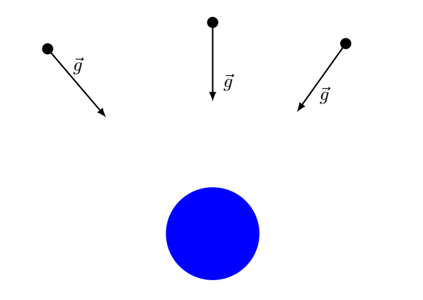

D1.5 Electric Field and Field Lines#
D1.5.1 Connection to University Physics I#
Let us take a step back to Physics 2210. There is nothing like realizing that what we learned before is actually quite useful for learning new things.
Consider the gravitational interaction between the Earth and a satellite. If we removed the satellite, the Earth’s gravitational field still exists since the source of the gravitational field is the mass of the Earth and not related to the satellite. We cannot see, feel, or otherwise determine this field unless we place an object into the field that allows for an interaction to take place. We often say: we place a test mass \(m\) (satellite) into the field.
In this case the interaction is the gravitaional force. For a satellite of mass \(m\), the magnitude of the gravitational interaction is
or in vector form
where \(g\) is the gravitational field due to the Earth at the location of the satellite.
How do we know the direction of this field \(g\)? We know that an object with a mass \(m\), when placed in a gravitational field will accelerate in the same direction as the field if there are no other interactions acting on the object. If we make a sketch of the Earth and place a small test mass at random points outside the Earth, this approach will visualize the gravitational field of the Earth as being spherical symmetric and pointing towards the center of the Earth.

The arrows that we sketch to represent the gravitational field is referred to as field lines and are not a real thing but merely a tool to visualize the field.
D1.5.2 The Electric Field Interaction#
The electric field does not act on mass, but rather on electric charge. When a charged object is placed in an electric field, it experiences an interaction whose strength depends on both the field and the charge.
Electric Force from an Electric Field (Magnitude)
The magnitude of the electric force acting on a test charge \(q\) placed in an electric field of magnitude \(E\) is
Here, \(E\) represents the magnitude of the electric field produced by some source charge or charge distribution, and \(q\) is the test charge immersed in that field. This relationship is directly analogous to gravity: the Earth creates a gravitational field, and a satellite placed in that field experiences a gravitational force as a result of the field interaction.
To fully specify the interaction, we must also define the direction of the electric field.
Direction of the Electric Field
The direction of the electric field is defined as the direction in which a positive test charge would accelerate if placed in the field, assuming no other interactions are present.
Because both force and field are vector quantities, the most complete description is given in vector form.
Electric Force from an Electric Field (Vector Form)
This expression emphasizes a key conceptual shift of the course: fields are fundamental, and forces arise from how charges interact with those fields.
Box Activity 1 — Visualizing the Electric Field of a Positive Point Charge
Consider a positive point charge acting as the source of an electric field.
Work through the following:
Observation
A point charge influences the space around it, even when no other charges are present.Task
Draw a diagram that includes:one positive point charge at the center (the source),
five positive test charges placed at different locations around the source.
Electric Field Lines
Using the definition of the electric field:sketch the electric field lines produced by the source charge,
clearly indicate the direction of each field line.
Interpretation
For each test charge, draw an arrow showing the direction in which it would accelerate if released from rest.Reflection
Explain why all field lines point in the direction you chose.
A Possible Solution Guide
For a positive source charge, the electric field points radially outward at every location.
Each field line starts at the positive charge and extends outward.
A positive test charge placed anywhere in the field would accelerate away from the source.
The field-line arrows therefore point away from the central charge.
The number and spacing of field lines are used to represent the strength of the field, but the direction at any point is always radial and outward for a positive source charge.
# DIY Cell
Box Activity 2 — Visualizing the Electric Field of a Negative Point Charge
Consider a negative point charge acting as the source of an electric field.
Work through the following:
Observation
A point charge creates an electric field in the space surrounding it, regardless of the presence of other charges.Task
Draw a diagram that includes:one negative point charge at the center (the source),
five positive test charges placed at different locations around the source.
Electric Field Lines
Using the definition of the electric field:sketch the electric field lines produced by the source charge,
clearly indicate the direction of each field line.
Interpretation
For each test charge, draw an arrow showing the direction in which it would accelerate if released from rest.Reflection
Explain how and why the field-line directions differ from those in Box Activity 1.
A Possible Solution Guide
For a negative source charge, the electric field points radially inward at every location.
Each field line points toward the negative charge.
A positive test charge placed anywhere in the field would accelerate toward the source.
The arrows on the field lines therefore point inward, terminating on the negative charge.
This inward-pointing pattern is the opposite of the field produced by a positive source charge and follows directly from the definition of electric field direction.
# DIY Cell
D1.5.3 Electric Field of a Point Charge#
If we understand how point charges interact, we can determine the electric field they produce. At this stage, we derive the electric field directly from Coulomb’s law. Later in the course, you will encounter an alternative method—Gauss’s law—for determining electric fields from charge distributions with certain symmetries.
We begin with the magnitude of the electric force between two point charges, given by Coulomb’s law:
This expression can be reinterpreted by viewing one charge as the source of an electric field and the other as a test charge placed in that field. Let \(q_1\) be the source charge and \(q_2\) the test charge. We can rewrite Coulomb’s law as
Comparing this with the definition of electric force due to an electric field,
we can identify the quantity in parentheses as the electric field produced by the source charge \(q_1\).
Electric Field of a Point Charge (Magnitude)
The magnitude of the electric field produced by a point charge \(q'\) at a distance \(r\) from the charge is
Here, \(r\) is the distance from the source charge \(q'\) to the point in space where the field is evaluated.
To fully describe the electric field, we must include direction. Using the position-vector form of Coulomb’s law, we can write the vector electric field due to a point charge.
Electric Field of a Point Charge (Vector Form)
In this expression:
\(\vec{r}\) is the position vector of the point in space where the field is evaluated,
\(\vec{r}'\) is the position vector of the source charge \(q'\), and
the direction of \(\vec{E}\) is radially away from the source for \(q' > 0\) and toward the source for \(q' < 0\).
This field-based description will become increasingly central as we move toward more general charge distributions and, eventually, to Maxwell’s equations, where electric and magnetic fields are treated as the fundamental physical quantities.
Box Activity 3 — Electric Field of a Proton (Hydrogen Atom)
A ground-state electron in the hydrogen atom is most likely to be found at a distance of
from the nucleus (a single proton).
Assume:
the proton is a point charge with charge
\[ q = +1.602\times10^{-19}\,\mathrm{C}, \]and that the electric field is described using the point-charge model.
Work through the following:
Observation
A proton produces an electric field in the space surrounding it, even when no other charges are present.Question
What is the electric field at the most probable location of the electron?Hypothesis
Predict the direction of the electric field at that location.Calculation
Use the magnitude of the electric field due to a point charge,\[ E = \frac{k\,q}{r^2}, \]to compute the field strength.
Conclusion
State both the magnitude and direction of the electric field.
A Possible Solution Guide
Step 1: Direction
The electric field due to a positive point charge points radially outward from the charge.
At the electron’s location, the electric field therefore points away from the proton.
Step 2: Magnitude
Using
with
we find
Final Answer
The electric field at the most probable electron location is
directed radially outward from the proton.
Important Note
This is a classical, field-based estimate. In a full quantum-mechanical description, the electron does not occupy a single location, but this calculation correctly captures the scale and direction of the electric field in the hydrogen atom.
# DIY Cell
Box Activity 4 — Components of the Electric Field from a Point Charge
Two charged particles are located on the \(x\)-axis (so \(y=0.0\,\mathrm{m}\) for both):
\(q_1 = +5.0\,\mathrm{mC}\) at \((x_1,y_1) = (0.0\,\mathrm{m},\,0.0\,\mathrm{m})\)
\(q_2 = -3.0\,\mathrm{mC}\) at \((x_2,y_2) = (0.2\,\mathrm{m},\,0.0\,\mathrm{m})\)
A point \(P\) is located at
Work through the following:
Observation
The electric field from a point charge points away from a positive charge and toward a negative charge.Question
What are the \(x\)- and \(y\)-components of the electric field \(\vec{E}_1\) at point \(P\) due to charge \(q_1\) alone?Vector Setup
Write the position vector of \(q_1\), \(\vec r_1\), and of point \(P\), \(\vec r_P\).
Construct the displacement vector from the source to the field point:
\[ \vec r_{P1} = \vec r_P - \vec r_1. \]Compute \(|\vec r_{P1}|\).
Calculation
Use the vector field of a point charge:\[ \vec{E}_1 = k\,q_1\frac{\vec r_{P1}}{|\vec r_{P1}|^3}. \]Conclusion
Report \(E_{1x}\) and \(E_{1y}\) (with units).
A Possible Solution Guide
Step 1: Displacement from \(q_1\) to \(P\)
Magnitude:
Step 2: Electric field vector
Use: $\( k=8.99\times10^9\ \mathrm{N\,m^2/C^2},\qquad q_1=+5.0\times10^{-3}\ \mathrm{C} \)$
Compute the prefactor:
So
Components:
Final Answer
The direction is consistent with a positive source charge: \(\vec E_1\) points away from \(q_1\) toward point \(P\).
# DIY
Box Activity 5 — Electric Field at Point P Due to Particle 2
Use the same physical setup and coordinates from Box 5.
The second charged particle has:
charge
\[ q_2 = -3.0\,\mathrm{mC}, \]position
\[ (x_2,y_2) = (0.2\,\mathrm{m},\,0.0\,\mathrm{m}). \]
The point of interest is
Work through the following:
Observation
A negative point charge produces an electric field that points toward the charge.Question
What is the electric field vector \(\vec E_2\) at point \(P\) due to particle 2 alone?Vector Setup
Write the position vector of \(q_2\), \(\vec r_2\), and of point \(P\), \(\vec r_P\).
Construct the displacement vector from the source to the field point:
\[ \vec r_{P2} = \vec r_P - \vec r_2. \]
Calculation
Use the vector electric field of a point charge:\[ \vec E_2 = k\,q_2\frac{\vec r_{P2}}{|\vec r_{P2}|^3}. \]Conclusion
Report the \(x\)- and \(y\)-components of \(\vec E_2\) with correct units and signs.
A Possible Solution Guide
Step 1: Displacement vector
Magnitude:
Step 2: Apply the electric field formula
with
Compute the prefactor:
So
Components:
Final Answer
The negative signs indicate that the electric field at \(P\) points toward the negative source charge, as expected.
# DIY Cell
Box Activity 6 — Net Electric Field at Point P (Vector Addition)
Two charged particles are located on the \(x\)-axis (so \(y=0.0\,\mathrm{m}\) for both):
\(q_1 = +5.0\,\mathrm{mC}\) at \((x_1,y_1) = (0.0\,\mathrm{m},\,0.0\,\mathrm{m})\)
\(q_2 = -3.0\,\mathrm{mC}\) at \((x_2,y_2) = (0.2\,\mathrm{m},\,0.0\,\mathrm{m})\)
A point \(P\) is located at
Use your results from Box 4 (for \(\vec E_1\)) and Box 5 (for \(\vec E_2\)).
Work through the following:
Observation
Electric fields add by vector superposition:\[ \vec E_{\text{net}} = \vec E_1 + \vec E_2. \]Question (Part 1)
What is the net electric field \(\vec E_{\text{net}}\) at point \(P\)?
Report both components and (optionally) the magnitude.Sketch (Part 2)
Make a sketch at point \(P\) showing:the vector \(\vec E_1\) (direction away from \(q_1\) since \(q_1>0\)),
the vector \(\vec E_2\) (direction toward \(q_2\) since \(q_2<0\)),
and the resulting vector \(\vec E_{\text{net}}\).
Be as exact as possible with:
directions (angles),
and relative lengths (relative scale).
Conclusion
State \(\vec E_{\text{net}}\) clearly with units and signs.
A Possible Solution Guide
1) Use results from Box 4 and Box 5
From Box 4:
From Box 5:
2) Net field (component form)
Add components:
So,
(Optional magnitude)
3) Sketch guidance (directions + relative scale)
At point \(P\):
\(\vec E_1\) points away from \(q_1\) (up and to the right).
\(\vec E_2\) points toward \(q_2\) (down and to the left).
Because \(|\vec E_1|\) is larger than \(|\vec E_2|\), the net field still points up and to the right, but it is noticeably reduced compared to \(\vec E_1\) alone.
Draw \(\vec E_1\) longer than \(\vec E_2\), then add them tip-to-tail to get \(\vec E_{\text{net}}\).
# DIY Cell